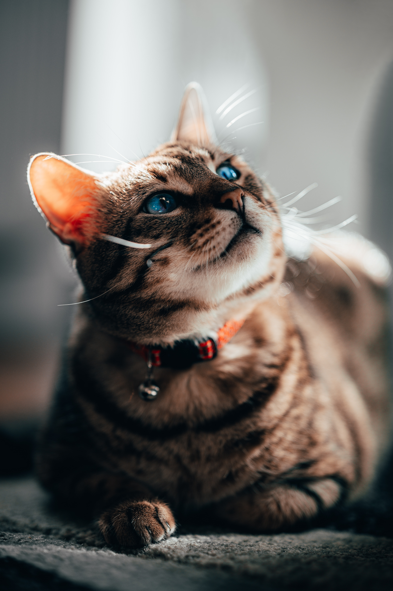

- first
- second
- third
보라에게
I am really sorry to make you cry and think too much Bora.
That isn't what I wanted.
Since a few days ago, I thought a lot of the future.
Because I am working nowdays, I could talk with co workers and listen their concerns.
They made me scared and I suspected what I planned if I can do it.
When I was with you in Switzerland, I had my own plans which didn't consider any risk.
However, after experiencing several failures and recognizing the other problem's appear,
I have lost my confidence too fast.
And these concerns made other problems naturally.

Concerning about not only studying license, coding or some languages for being employed with uncertainity and unstablity about future,
but also problems which can happen earning money in the future made me too stressful.
There was no rest time in my mind, even tho I was taking my times, so I was becoming too exhausted so fast.
I'm ashamed, but I wanted to run away from those problems. I felt so strongly that I kept falling behind.
I came to realize that reality is dozens of times more harsh and difficult than I thought. And it causes other problems that I didn't consider.
I thought you could understand. Because we're in the same country anyway, and we can always see each other whenever we want. But this was my selfish idea.
Through this time, I thought about it more deeply from your perspective.
Thanks to the promises we made, you were motivated and made our relationship deeper. Also, because of these things, you decided to come to Korea, and now you are working hard on your hard work.
To live with me and achieve what we planned.
When I came to think of this, I felt so guilty. I realized that I had too weak and selfish thoughts to avoid problems.
I'm the biggest reason you're coming to this country, so even tho I had to take care of that part, but I've only hurt your heart.
These thoughts made me think that I was similar to "Jihoon." I felt so disgusted with myself.
I didn't see the most important things because of the anxiety and uncertainty. I'm truly sorry, Bora.
This incident made me realize once again how precious you are to me. And how valuable our promises are.
I love you so much from the bottom of my heart. I sincerely apologize for my weak self. Although I'm still very anxious, I'll try harder and make up my mind to accomplish what we promised.
And really, even if I get a job far away, let's solve the problem together. We'll always be together. I promise you, look.
Let's get through this, Bora. I love you.